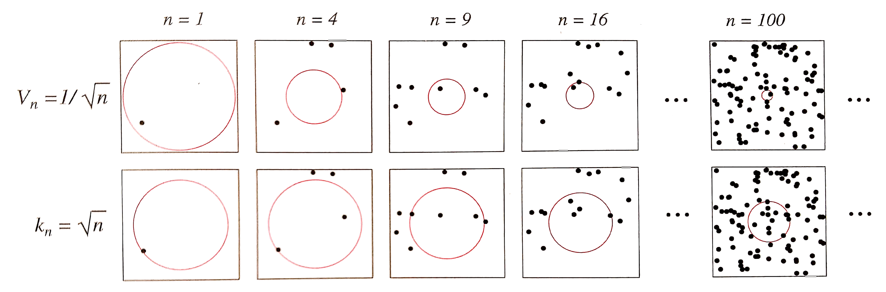

If we know posteriors exactly, this the optimal strategy!
Non-parametric density estimation
We have assumed that either
The likelihoods $\prob{P}{\vec{x}|\omega_k}$ were known (likelihood ratio test), or
At least their parametric form was known (parameter estimation)
What if all that we have and know is the data?
Ooh! How challenging exciting!
Histogram
The simplest form of non-parametric density estimation
Divide the sample
space into a number of bins;
Approximate the
density by the fraction of training
data points that fall into each bin
$$\prob{P}{\vec{x}} = \frac{1}{N}\frac{\text{# of } \vec{x}^i \text{ in the same bin as }\vec{x}}{\text{bin width}}$$
Need to define: bin width and first bin starting position
Histogram is simple but problematic
The density estimate depends on the starting bin position
The discontinuities of the estimate are only an artifact of the chosen bin locations
The curse of dimensionality, since the
number of bins grows exponentially with the number of dimensions
Unsuitable for most practical
applications except for quick visualizations in one or two dimensions
Let's leave it alone!
Non-parametric DE
general formulation
What we are trying to accomplish?
The probability that $\vec{x}\sim \prob{P}{\vec{x}}$, will fall in
a given region $\cal R$ of the sample space is
\[
\theta = \int_{\cal R} \prob{P}{\vec{x}^{\prime}}d\vec{x}^{\prime}
\]
Probability that $k$ of $N$ drawn vectors $\{\vec{x}^1, \dots, \vec{x}^N\}$ will fall in region ${\cal R}$ is
\[
\prob{P}{k} = {N \choose k} \theta^k (1 - \theta)^{N-k}
\]
From properties of the binomial pmf
$\prob{E}{\frac{k}{N}} = \theta$
As $N\rightarrow\infty$, variance reduces and we can obtain a good estimate from
$
\theta \simeq \frac{k}{N}
$
Non-parametric DE
general formulation
Assume $\cal R$ is so small that $\prob{P}{\vec{x}}$ does not much vary across it
\[
\theta = \int_{\cal R} \prob{P}{\vec{x}^{\prime}}d\vec{x}^{\prime} \simeq \prob{P}{\vec{x}}V
\]
Combining with $\theta \simeq \frac{k}{N}$
\[
\prob{P}{x} \simeq \frac{k}{NV}
\]
We obtain a more accurate estimate increasing $N$ and shrinking $V$
practical considerations
As $V$ approaches zero ${\cal R}$ encloses no examples
Have to find a compromise for $V$
The general expression of nonparametric density becomes
\[
\prob{P}{x} \simeq \frac{k/N}{V} \mbox{, where } \begin{cases}
V & \text{volume surrounding } \vec{x} \\
N & \text{total #examples}\\
k & \text{#examples inside } V
\end{cases}
\]
For convergence of the estimator we need to provide for:
\begin{align}
&\underset{n\to\infty}{\lim} V = 0\\
&\underset{n\to\infty}{\lim} k = \infty\\
&\underset{n\to\infty}{\lim} k/N = 0\\
\end{align}
Two approaches that provide this
Fix $V$ and estimate $k$ - kernel density estimation (KDE)
Fix $k$ and estimate $V$ - k-neares neighbor (kNN)

Parzen windows
Assume, the region
$\cal R$ enclosing $k$ examples is a hypercube with the side of
length $h$ centered at $\vec{x}$
Its volume is $V = h^d$, where $d$ is the dimensionality
To find the number of examples that
fall within this region we define a window function $K(u)$ (a.k.a. kernel)
\[
\prob{K}{u} = \begin{cases}
1 & |u_j| \lt \frac{1}{2} \forall j = 1\dots d\\
0 & \text{otherwise}
\end{cases}
\]
Known as a Parzen window or the naïve estimator and corresponds to a unit hypercube centered at the origin
$\prob{K}{\frac{(\vec{x} - \vec{x}^n)}{h}} = 1$ if $\vec{x}^n$ is inside a
hypercube of side $h$ centered on $\vec{x}$, and zero otherwise
Parzen windows
The total number of points inside the hypercube is
\[
k = \sum_{n=1}^N \prob{K}{\frac{\vec{x} - \vec{x}^n}{h}}
\]
The density estimate becomes
\[
\prob{P$_{KDE}$}{\vec{x}} = \frac{1}{Nh^d} \sum_{n=1}^N \prob{K}{\frac{\vec{x} - \vec{x}^n}{h}}
\]
Note, Parzen window resembles histogram but with the bin location determined by the data
Parzen windows
What's the role of the kernel function?
Let us compute the expectation of the estimate $\prob{P$_{KDE}$}{\vec{x}}$
\begin{align}
E\left[\prob{P$_{KDE}$}{\vec{x}}\right] &= \frac{1}{Nh^d} \sum_{n=1}^N E\left[\prob{K}{\frac{\vec{x} - \vec{x}^n}{h}}\right]\\
& = \frac{1}{h^d} E\left[ \prob{K}{\frac{x-x^\prime}{h}}\right]\\
& = \frac{1}{h^d} \int \prob{K}{\frac{x-x^\prime}{h}} \prob{P}{x^\prime}dx^\prime\\
\end{align}
$\prob{P$_{KDE}$}{\vec{x}}$ is a convolution of the true density with the kernel function
As $h\to 0$, the kernel approaches Dirac delta and $\prob{P$_{KDE}$}{\vec{x}}$ approaches true density